- To move slides, use the arrow keys or swipe on your mobile device
- To go to full screen, press "f"
- To print as PDF, go to this URL:
?print-pdf, then print (warning: may be slow and not work on all browsers).
- To see an overview, press esc
Dynamical, accretion, and photoevaporative truncation of disks living in dense clusters
with Justin Otter, John Bally, Nick Ballering, Ciriaco Goddi, Dick Plambeck, Melvyn Wright, and Josh Eisner
Slides available at
https://keflavich.github.io/talks/EPOS_2022.html
Opening Summary
- Most of the star systems in the OMC1 cluster are disk-bearing
- Disks in OMC1 and the ONC are both more massive and smaller than in smaller SFRs
- Photoevaporative feedback may affect ONC stars, but OMC must be either dynamically or accretion truncated
Star formation in bound clusters is different
(at least for disks)
(at least for disks)
The Orion Hot Core
The Orion Hot Core
ONC+OMC: Gemini image
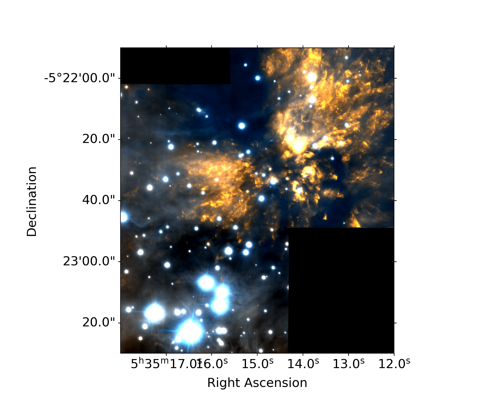 ONC+OMC: IR
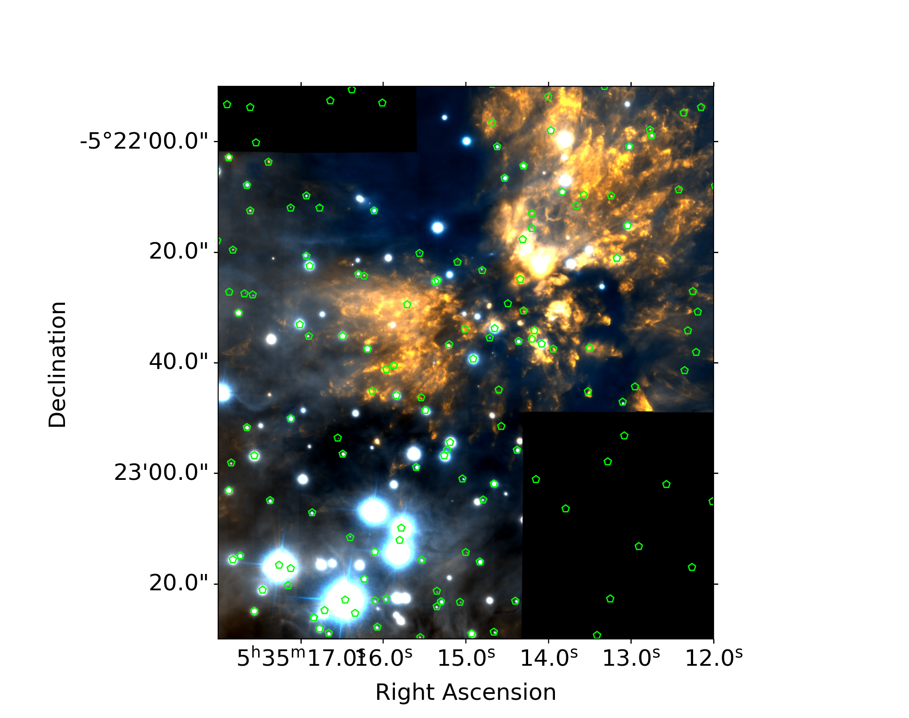
ONC+OMC: IR + X-ray
ONC+OMC: IR + X-ray + radio
ONC+OMC: IR + X-ray + radio + mm

ONC+OMC: IR + X-ray + radio + mm
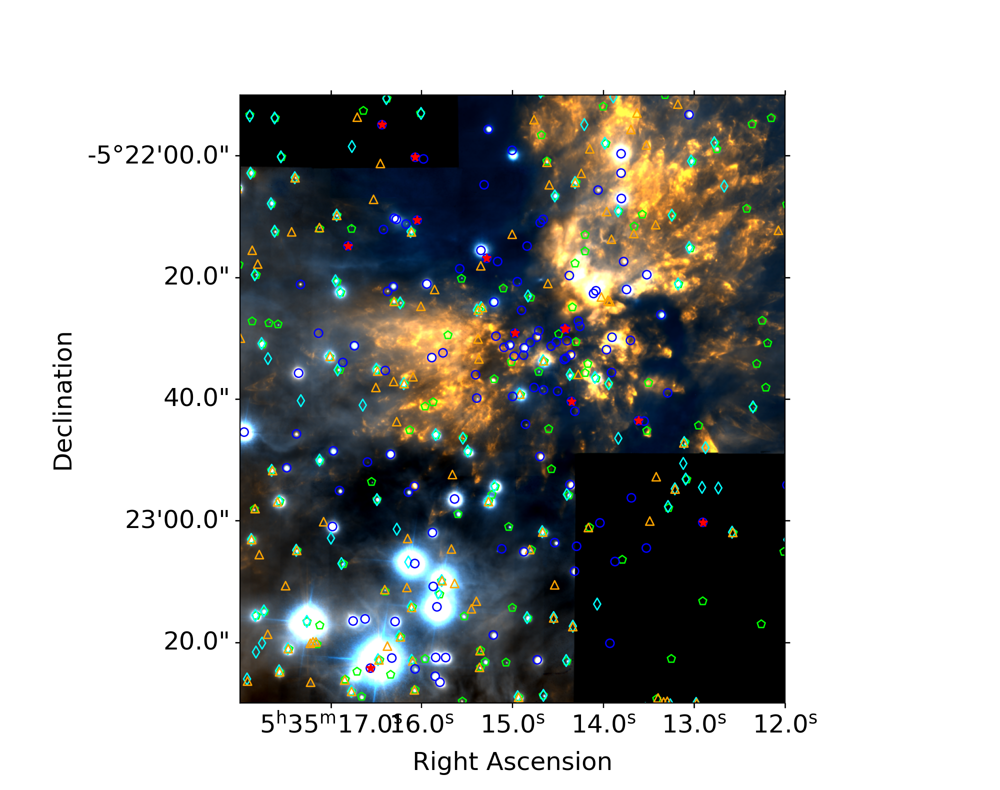
Otter+ 2021
(mm only!)
At high stellar densities,


 Otter+, resubmitted
Otter+, resubmitted
FOV: 0.07 pc (16000 AU)
72 YSOs
One "hot core"

A different calculation of the same (bonus slide):

If they're just young, still accreting, maybe they have not grown larger yet (inconsistent w/Tobin results)
Otter+, resubmitted
FOV: 0.07 pc (16000 AU)
72 YSOs
One "hot core"
Orion Source I


Right: G17, Maud+ 2020

(mm only!)
ONC+OMC: IR + X-ray + radio + mm
ONC+OMC: IR + X-ray + radio + mm
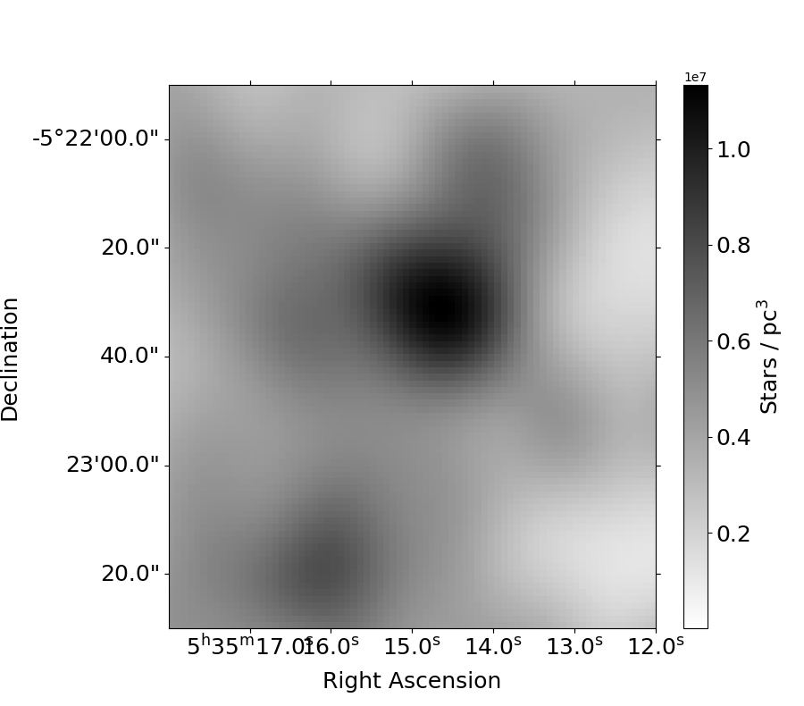
ONC in bottom-left, OMC in center
ONC+OMC: IR + X-ray + radio + mm
ONC+OMC: IR + X-ray + radio + mm
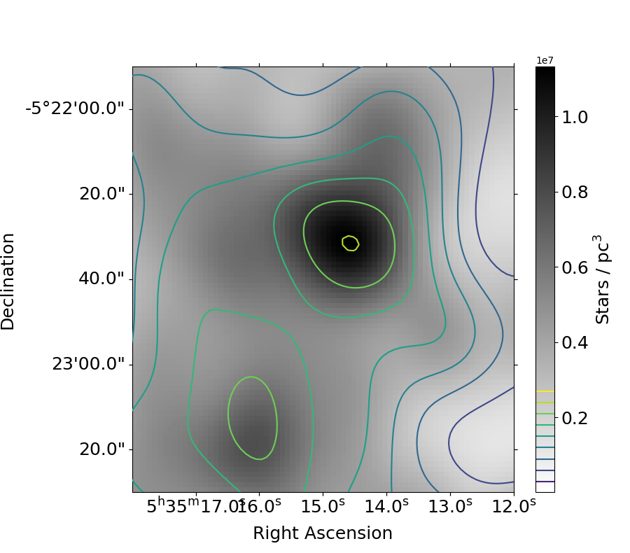 ONC+OMC: IR + X-ray + radio + mm
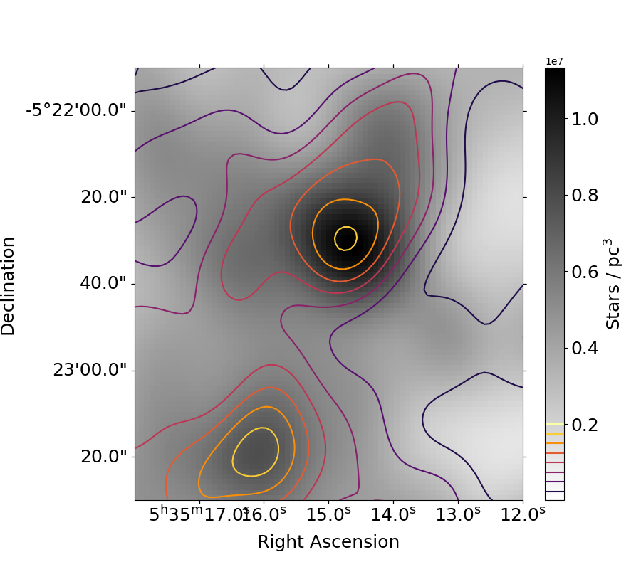 ONC+OMC: IR + X-ray + radio + mm
mm-detected sources account for ~half of all stars
Gas vs Stars
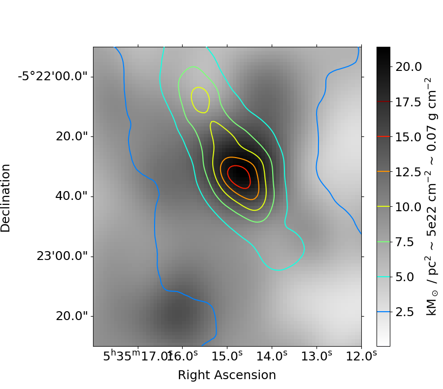
The OMC "Hot Core" is dominated by stellar, not gas, mass
(Σ* assumes $\lt M\gt = 0.3 M_\odot$, but SrcI + BN are 15,10 $M_\odot$)
ONC+OMC: IR + X-ray + radio + mm
ONC+OMC: mm
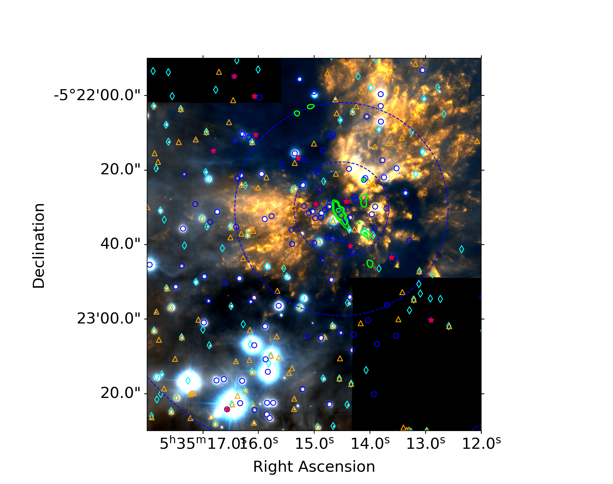 OMC: mm
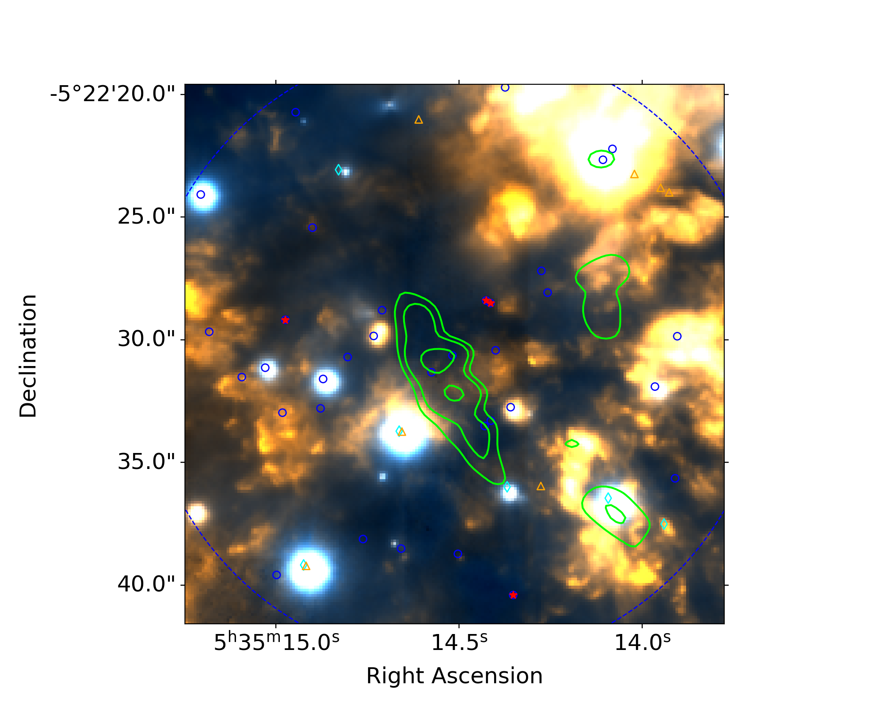
The OMC "Hot Core" is dominated by stellar, not gas, mass
(Mgas<20 M⊙)
OMC: IR + X-ray + radio + mm
OMC: IR + X-ray + radio + mm
The OMC Cluster is dense & full of disks
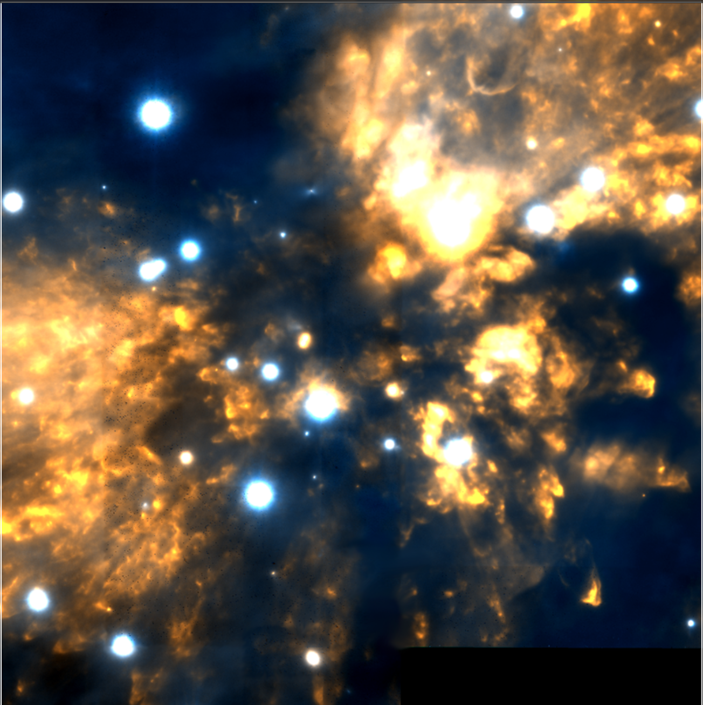


FOV: 0.07 pc (16000 AU)
72 YSOs
one "hot core"
72 YSOs
one "hot core"
N*OMC(Otter+ 2021) = 1.6 x 105 pc-3
N*ONC(Otter+ 2021) = 0.6 x 105 pc-3
N*ONC(Hillenbrand+ 1998) = 0.2 x 105 pc-3
The disks are (mostly) resolved
OMC disks are massive
OMC disks are more massive
OMC disks are more massive (Like class 0 & I)
ONC and OMC disks are small
ONC and OMC disks are smaller
ONC and OMC disks are smaller than Class 0 & I
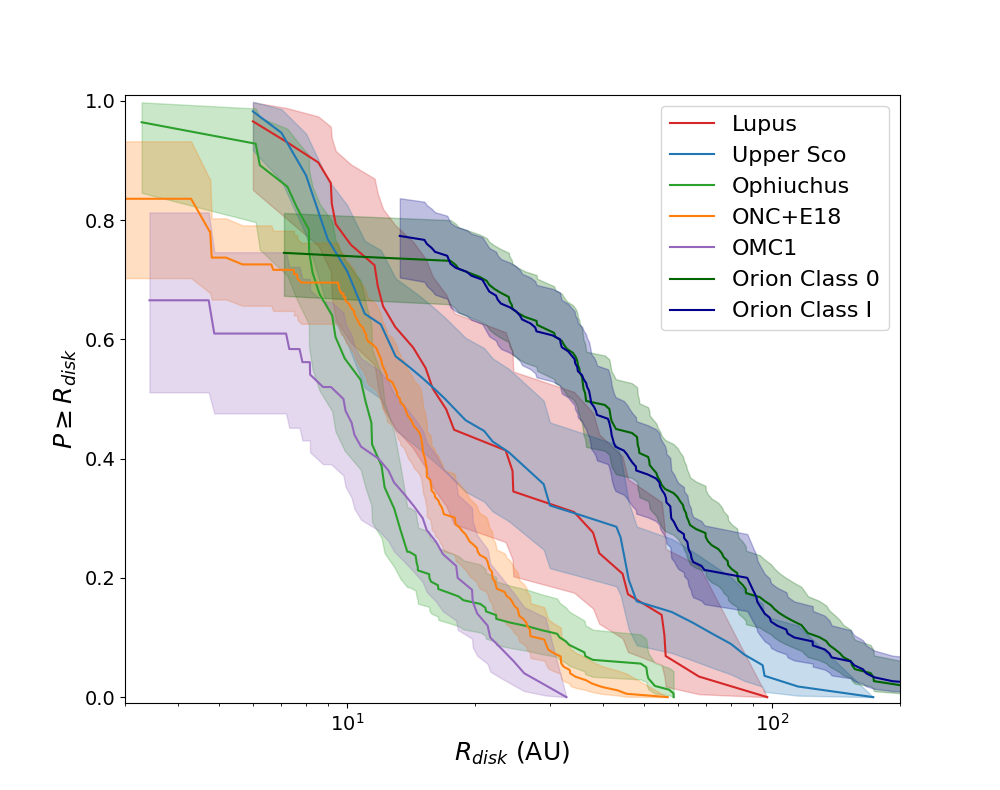Scaling relations don't line up
What shrinks disks in clusters?
- Photoevaporation (e.g., the proplyds; McCullough+ 1995, Bally+ 1998) (see also Haworth et al. 2018; Parker et al. 2021)
- Dynamical interactions (e.g., Vincke & Pfalzner 2016)
- Face-on accretion (e.g., Wijnen+ 2017)
Truncation is not solely due to photoevaporation
OMC sources are shielded, so they don't get photoevaporated. At high stellar densities,
close encounters are frequent
How dense are cluster-forming regions?
OMC1 is denser than the ONC
N*OMC(Otter+ 2021) = 1.6 x 105 pc-3
N*ONC(Otter+ 2021) = 0.6 x 105 pc-3
N*ONC(Hillenbrand+ 1998) = 0.2 x 105 pc-3
Many new disks in the OMC
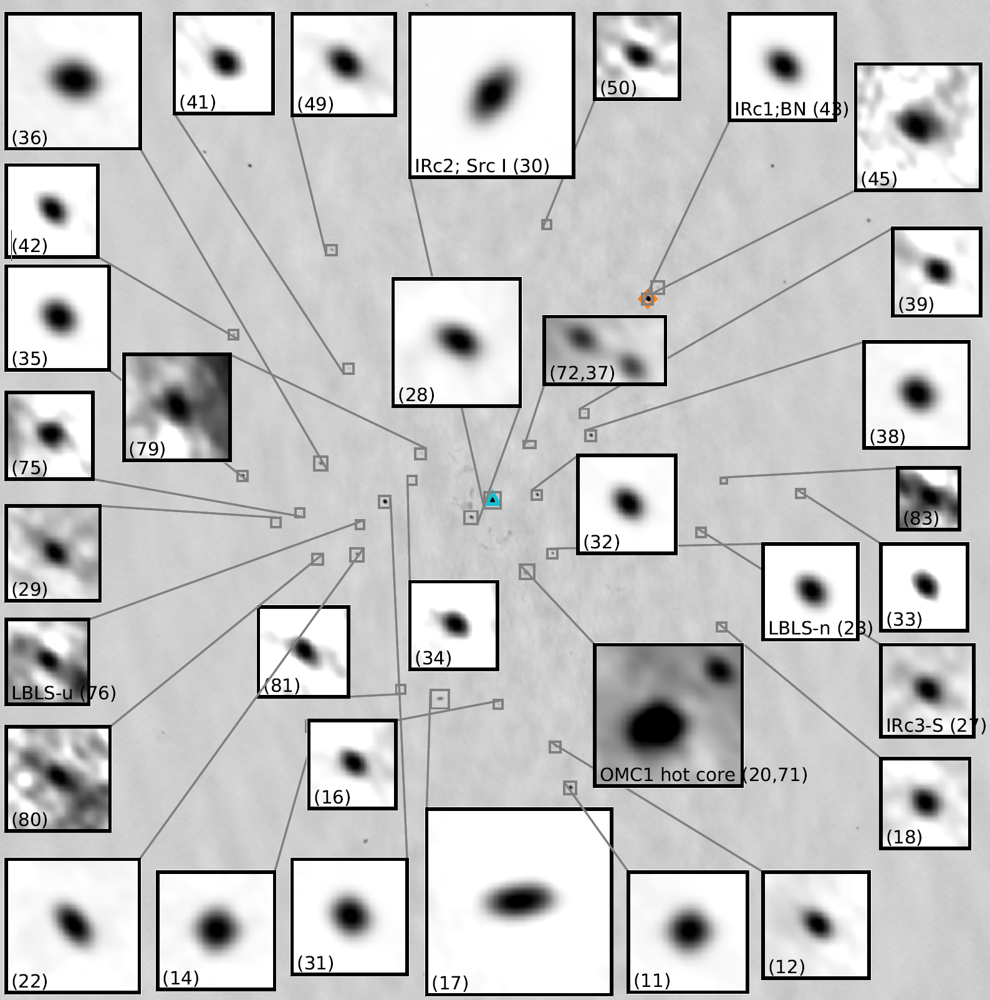
Otter+, resubmitted
FOV: 0.07 pc (16000 AU)
72 YSOs
One "hot core"
Disk Gallery
But are they frequent and close enough?
Interactions on a scale $r=\sigma^{1/2}$ happen on a timescale $t \sim (n \sigma v_{disp})^{-1}$
$$ \color{darkgreen}{n \sim 10^{5-6} \mathrm{stars~pc}^{-3}},
\color{darkblue}{v_{disp} \sim 3 \mathrm{km~s}^{-1}}$$
For interactions to push to $\sim30$ AU (the largest disk),
$$ r= \sigma^{1/2} \sim 30 \mathrm{AU}
\left(\frac{t}{\color{red}{15 \mathrm{Myr}}}\right)^{-1/2}
\color{darkgreen}{\left(\frac{n}{10^6 \mathrm{pc}^{-3}}\right)^{-1/2}}
\color{darkblue}{\left(\frac{v_{disp}}{3 \mathrm{km~s}^{-1}}\right)^{-1/2}}$$
$\color{red}{15 \mathrm{Myr}}$ is ~100x too long.
Can squeeze this by a bit b/c disk is smaller than $r$; Breslau+ 2014: $R_{disc} \sim 0.28 r_{peri} \left(\frac{M_1}{M_2}\right)^{0.32}$
$$ r= \sigma^{1/2} \sim 370 \mathrm{AU}
\left(\frac{t}{0.1 \mathrm{Myr}}\right)^{-1/2}
\left(\frac{n}{10^6 \mathrm{pc}^{-3}}\right)^{-1/2}
\left(\frac{v_{disp}}{3 \mathrm{km~s}^{-1}}\right)^{-1/2}$$
Face-on accretion & ram pressure
Wijnen+2016
and 2017a,
b model: face-on accretion brings in low-$j$ material,
ram pressure strips loosely-bound material.
Bottom-right: not quite as dense as OMC, still too-big disks, but not a bad match.
Bottom-right: not quite as dense as OMC, still too-big disks, but not a bad match.
Dynamical ends to accretion

The BN/I/x interaction is the poster case of accretion ended by dynamical interaction.
Summary and Prospectives
- Disks are smaller and more massive in the OMC
- and generally in more gas-rich regions?
- Stellar dynamics are important to disk structure, but gas-disk interactions may be more important
- Dynamics in protocluster regions matter
- This cycle marks a good time to start measuring proper motions with ALMA!
- Multiplicity and offset hot cores are a sign of dynamical interactions (also good to examine with ALMA long baselines)
- We need JWST to measure the IR from protostars even in Orion
Other speculations
Do the disks start small and grow later?
Viscous spreading could result in older disks being larger
It is possible that only the dust disks are smaller, but the gas disks are still big.
However, all disk radii (Orion & elsewhere) are computed based on dust mass, and there's (presently) no reason to think different environments would preferentially push the dust in.
Maybe the disks are intrinsically smaller in Orion (Caselli, Kuiper)
However, all disk radii (Orion & elsewhere) are computed based on dust mass, and there's (presently) no reason to think different environments would preferentially push the dust in.
If they're just young, still accreting, maybe they have not grown larger yet (inconsistent w/Tobin results)
The canonical hot core isn't
(e.g., Zapata+ 2011)Disk-bearing stars on Gemini
OMC1 is denser than the ONC
N*OMC(Otter+ 2021) = 1.6 x 105 pc-3
N*ONC(Otter+ 2021) = 0.6 x 105 pc-3
N*ONC(Hillenbrand+ 1998) = 0.2 x 105 pc-3
Many new disks in the OMC
Otter+, resubmitted
FOV: 0.07 pc (16000 AU)
72 YSOs
One "hot core"
Disk Gallery
Orion Source I
a disk around a 15 M⊙ YSO
Material with vesc < vejected was lost.
vejected = 11.5 km/s = vesc(200 AU)
Disk is oriented along the direction of motion: probably re-oriented in ejection
vejected = 11.5 km/s = vesc(200 AU)
Disk is oriented along the direction of motion: probably re-oriented in ejection
Mdisk ~ 0.02 - 2 M⊙ << M*
(Plambeck+ 2016)
SrcI is leaving the hot core
Left: Tanaka+ 2020, pair of NaCl-bearing disks.
Right: G17, Maud+ 2020
Temperature?
Temperature?
A contrived model
Observing the Keplerian rotation profile of a disk is the most direct way to measure a protostar's mass
(we can only see the disk, not the star itself)
YSO disks in Orion
YSO disks in Orion
YSO disks in Orion
YSO disks in Orion
YSO disks in Orion
YSO disks in Orion
Inclinations are consistent with random
The disks are mostly optically thick
Flux & size histograms
MST source separation: ONC vs OMC
Band-to-band size comparison
Size vs Flux
The new discoveries aren't all faint
B3-B6 and B6-B7 spectral indices
Spectral indices
Grey dashed: upper limits. Grey circles: lower limits
ONC: IR
ONC+OMC: IR+mm
OMC: mm
ONC: IR
OMC: IR+mm
OMC: mm